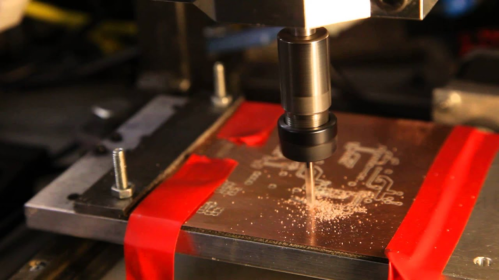
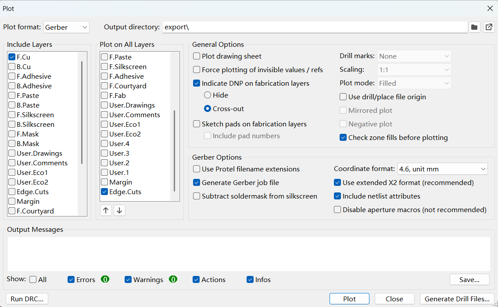
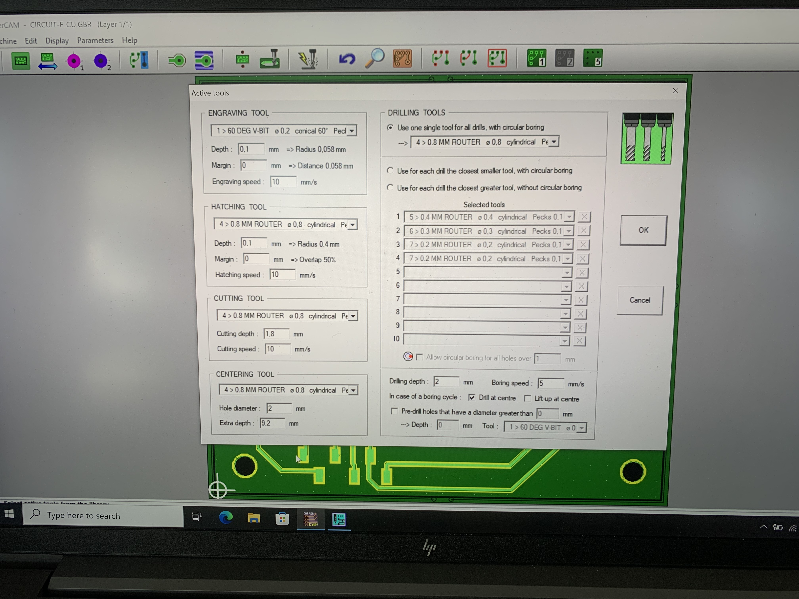
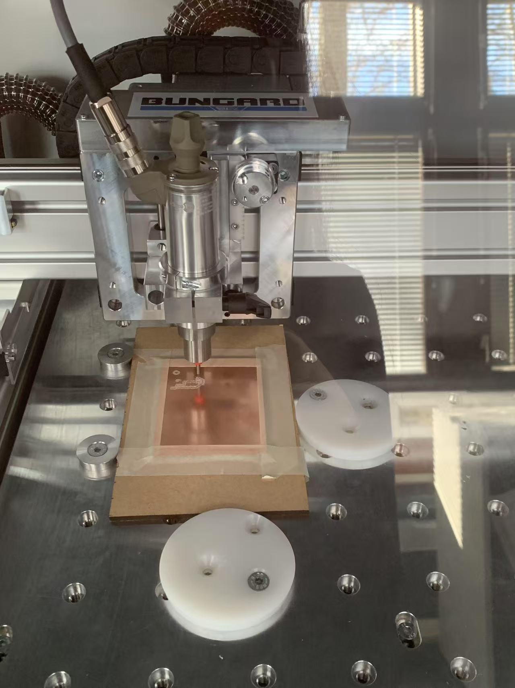
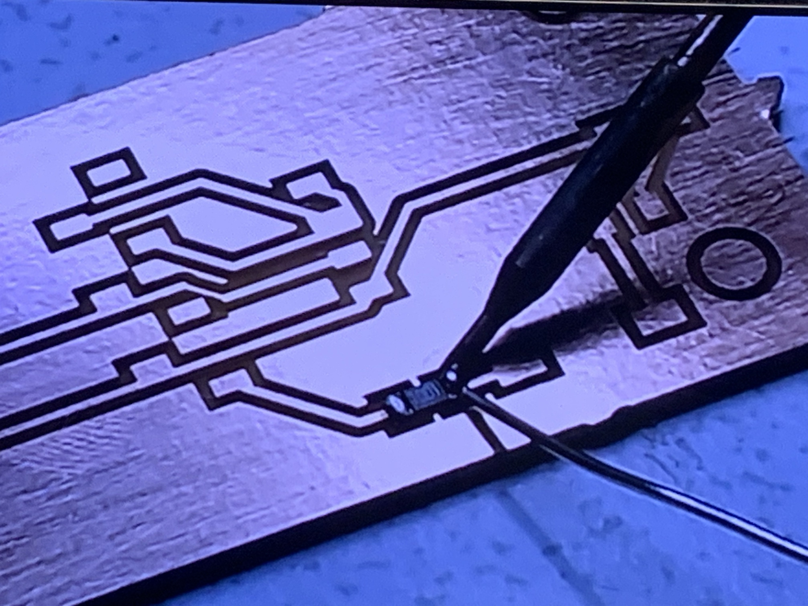
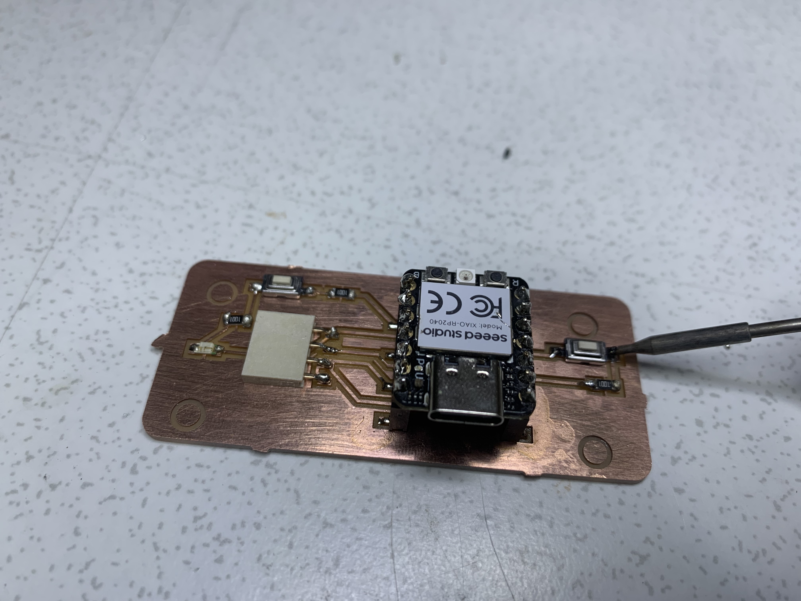
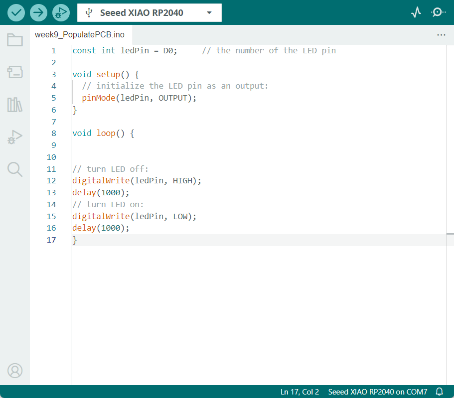

Electronics Production
The possible ways to manufacturing Printed Circuit Boards(PCBs) are tradictional etching, addictive maunufacturing and PCB miling.
The manufacturing usually use (materials) copper-clad laminates, fiberglass(FR1,2,4), and epoxy through process methods like chemical etching, laser drilling, and CNC machining.
The PBC milling process including: Panel preparation use CCL, Drilling to connect different layer circuits, Electroplating to forming the conductive layer, Etching for circuit pattern, Solder paste coating, Silk-screen printing for information, PBC Testing, PBC Milling for shape and scale of the circuit, PBC Baking to enhance stability of the board, X-ray alignment, SMT assembly, Through-hole soldering.
There are also some important things in functional board like solder mask application component assembly.
PCB Milling
It's a subtractive manufacturing process use CNC(Computer Numerical Control) to curve out the copper layers of a PCB to cut away copper-coated substrate to create the desired circuit design.
It starts from Garber file that include the circuit design data(like drill location and copper traces) which can convert into tool path using software like CopperCAM.
Key tool parameters include spindle speed, feed rate, tool diameter, step-over distance, Curtting Trace and Cutting Depth, tool type. Safty is important so always consider wearing gloves, googles, dust extraction and ventilation. Also important that check the overlapping paths, incorrect drill sizes, and tool misalignments.

Produce the Board
I use Bungard CCD/2 PCB milling machine which has a workspace of 270 x 325 x 38 mm.
First, measuring the materials to fit them within the machine's work area. Then, use the x/y orgin(start point of PCB board, usually in lower left corner) to align the material to the machine's coordinate system, and the z origin that determine proper depth by set the tool on the material surface. And, use RoutePro3000 to load the tool path that generated from the Gerber files to the PCB milling machine. Finally, use a 0.4mm diameter end mill for engrave/ isolation milling, use a 0.8mm diameter end mill for drilling and cutting the outline. Set the appropriate feed rate and spindle speed.



Populate the Board
My compontents including 1 XIAO board, 1 I2C connector, 1 LED, 2 switchs, and 3 resisters.
First, I use soldering iron to solder the solder onto one circuit cube of my PBC board. Then, I use tweezers to pick up the component and press one end onto the solder to fix it. Like this, I solder all the components according to the circuit diagram in the PCB file from KiCad.
The milling part isolate different circuit, so it's important to make sure it's separated or not close to each other.
Make sure the compontents do not cover other circuits, sometimes it can be easily overlooked, since the compontent are not in the PCB board while milling. So it's very important to see the 3D viewer in KiCad pcb mode.
After solder the compontents, I can use Multimeter to do the continuity test, ensure the circuit connections are correct.


Make the Board Works
I get information from here. I press and hold the BOOT button and then connect the Seeed Studio XIAO RP2040 to the PC, if the "RPI-RP2" disk is shown on the PC and the Power LED on the Seeed Studio XIAO RP2040 is turned on, the connnection is complete. And then select the serial port name of the connected Seeed Studio XIAO RP2040.
Be careful not to insert the XIAO board in the wrong direction, make sure "RPI-RP2" disk is shown and the Power LED is turned on, use the example "blink" to let the User LED blink to ensure connect the board and the computer well.
Since I put the button and LED in one Series Circuit, I start from Pin D0, put the button settled before the LED, put the GND in the end. After I write the blink code and let the output be Pin D0, I press the button, and the LED start blink.
